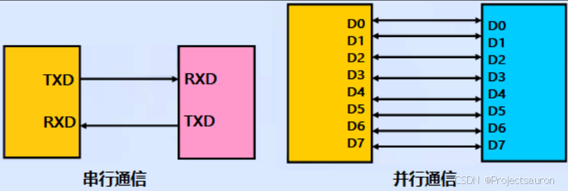
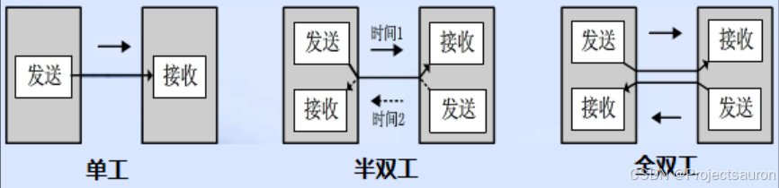
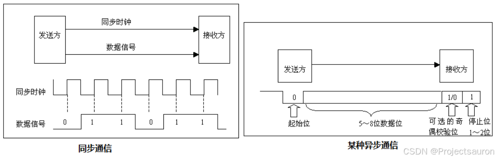
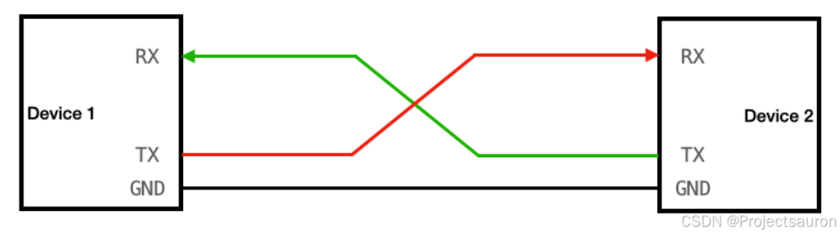
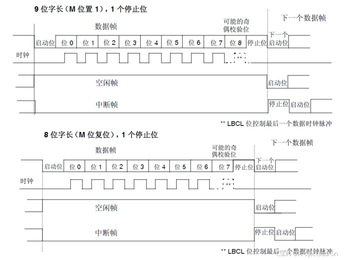

UART 通信协议详解
[toc]
一、概述
UART (Universal Asynchronous Receiver/Transmitter，通用异步收发器) 是一种常用的串行通信协议，用于在计算机和外部设备之间传输数据。它是一种异步通信协议，也就是说数据的传输不需要事先建立好同步时钟信号。
UART 协议定义了数据传输的格式和通信规则。它包括一系列的控制信号和数据线来实现双向的串行通信。常见的 UART 协议有 RS-232、RS-422 和 RS-485 等。
UART 协议的数据传输是基于帧（Frame）的概念的。每个数据帧由一个起始位、若干个数据位、一个可选的奇偶校验位和一个或多个停止位组成。起始位用于指示数据帧的开始，数据位用于传输实际的数据，奇偶校验位用于检测数据的正确性，停止位用于指示数据帧的结束。
UART 协议的工作方式是通过不断发送和接收数据来实现通信。发送方将数据按照一定的格式组织成数据帧，并通过数据线发送出去。接收方接收到数据后，解析数据帧，并进行相应的处理。
UART 协议的优点是简单、成本低廉且广泛应用。它可以通过简单的硬件电路实现，并且在嵌入式系统、通信设备、传感器等领域得到广泛应用。
然而，UART 协议也有一些缺点，例如传输速率相对较低、只能实现点对点通信等。在高速、多设备的通信环境下，可能需要使用其他更高级的通信协议。
二、UART 详解
1、数据通信的基本概念
1.1 数据通信方式
按数据通信方式分类，可分为串行通信和并行通信两种。串行和并行的对比如下图所示：

串行通信的基本特征是数据逐位顺序依次传输，优点是传输线少、布线成本低、灵活度高等优点，一般用于近距离人机交互，特殊处理后也可以用于远距离，缺点就是传输速率低。
而并行通信是数据各位可以通过多条线同时传输，优点是传输速率高，缺点就是布线成本高，抗干扰能力差因而适用于短距离、高速率的通信。
1.2 数据传输方向
根据数据传输方向，通信又可分为全双工、半双工和单工通信。全双工、半双工和单工通信的比较如下图所示：

单工是指数据传输仅能沿一个方向，不能实现反方向传输，如校园广播。
半双工是指数据传输可以沿着两个方向，但是需要分时进行，如对讲机。
全双工是指数据可以同时进行双向传输，比如日常的打电话。
1.3 数据同步方式
根据数据同步方式，通信又可分为同步通信和异步通信。同步通信和异步通信比较如下图所示：

同步通信要求通信双方共用同一时钟信号，在总线上保持统一的时序和周期完成信息传输。
- 优点：可以实现高速率、大容量的数据传输，以及点对多点传输。
- 缺点：要求发送时钟和接收时钟保持严格同步，收发双方时钟允许的误差较小，同时硬件复杂。
而异步通信不需要时钟信号，而是在数据信号中加入开始位和停止位等一些同步信号，以便使接收端能够正确地将每一个字符接收下来，某些通信中还需要双方约定传输速率。
- 优点：没有时钟信号硬件简单，双方时钟可允许一定误差。
- 缺点：通信速率较低，只适用点对点传输。
1.4 通信速率
在数字通信系统中，通信速率（传输速率）指数据在信道中传输的速度，它分为两种：传信率和传码率。
- 传信率：每秒钟传输的信息量，即每秒钟传输的二进制位数，单位为bit/s（即比特每秒），因而又称为比特率。
- 传码率：每秒钟传输的码元个数，单位为 Baud（即波特每秒），因而又称为波特率。
波特率被传输的是码元，码元是信号被调制后的概念，每个码元都可以表示一定 bit 的数据信息量。比如说，在 TTL 电平标准的通信中，用 0V 表示逻辑 0，5V 表示逻辑 1，这时候这个码元就可以表示两种状态。如果电平信号 0V、2V、4V 和 6V 分别表示二进制数 00、01、10、11，这时候每一个码元就可以表示四种状态。
由上述可以看出，码元携带一定的比特信息，所以比特率和波特率也是有一定的关系的。比特率和波特率的关系可以用以下式子表示：
$$
比特率 = 波特率 * log_2M
$$
其中 M 表示码元承载的信息量，也可以理解为 M 为码元的进制数。
例：波特率为 100 Baud，即每秒传输 100 个码元，如果码元采用十六进制编码（即 M=16，代入上述式子），那么这时候的比特率就是 400 bit/s。如果码元采用二进制编码（即 M=2，代入上述式子），那么这时候的比特率就是 100 bit/s。
2、UART 协议
经过上面的介绍，可以给出 UART 是一种串行、异步、全双工通信协议。
2.1 串口连接
UART 通道有两条数据线。每个设备上都有一个 RX 引脚和一个 TX 引脚（RX 用于接收，TX 用于发送）。每个设备的 RX 引脚都连接到另一个设备的 TX 引脚。请注意，没有共享时钟线！这是通用异步接收方发送方的“异步”方面。

2.2 串口协议帧
串口通信的数据包由发送设备的 TXD 接口传输到接收设备的 RXD 接口。在串口通信的协议层中，规定了数据包的内容，它由起始位、主体数据、校验位以及停止位组成，通讯双方的数据包格式要约定一致才能正常收发数据，其组成部分如下图：

其中 9 位字长的协议帧和 8 位协议帧除了多了一位断电数据位外，并无其它差别。
在启动位，我们首先要将时钟拉低，而它的长度就是前面所提到的波特率，常见的波特率有：9600、19200、115200 等。这是由于异步通信中没有时钟信号，因此两个通信设备需要就波特率达成一致。
数据帧格式需要我们提前约定好，串口通信的数据帧包括起始位、停止位、有效数据位以及校验位。
起始位和停止位
串口通信的一个数据帧是从起始位开始，直到停止位。数据帧中的起始位是由一个逻辑 0 的数据位表示，而数据帧的停止位可以是 0.5、1、1.5 或 2 个逻辑 1 的数据位表示，只要双方约定一致即可。有效数据位
数据帧的起始位之后，就接着是数据位，也称有效数据位，这就是我们真正需要的数据，有效数据位通常会被约定为 5、6、7 或者 8 个位长。有效数据位是==低位（LSB）在前，高位（MSB）在后==。校验位
校验位可以认为是一个特殊的数据位。校验位一般用来判断接收的数据位有无错误，检验方法有：奇检验、偶检验、0 检验、1 检验以及无检验。下面分别介绍一下：- 奇校验是指有效数据为和校验位中“1”的个数为奇数，比如一个8 位长的有效数据为：10101001，总共有 4 个“1”，为达到奇校验效果，校验位设置为“1”，最后传输的数据是 8 位的有效数据加上1 位的校验位总共 9 位。
- 偶校验与奇校验要求刚好相反，要求帧数据和校验位中“1”的个数为偶数，比如数据帧：11001010，此时数据帧“1”的个数为 4 个，所以偶校验位为“0”。
- 0 校验是指不管有效数据中的内容是什么，校验位总为“0”，1 校验则是校验位总为“1”。
- 无校验是指数据帧中不包含校验位。由于一旦发生多个数据位丢失的时候，就极大可能会出现校验出错的情况，所以我们一般是使用无检验的情况。
下面以 9 位字长、1 位停止位、无校验举例怎么发送数据：
比如说，要发送给的数据是 0x01，也就是 00000001b，所以整个协议帧的电平为：低 高低低低低低低低 高。